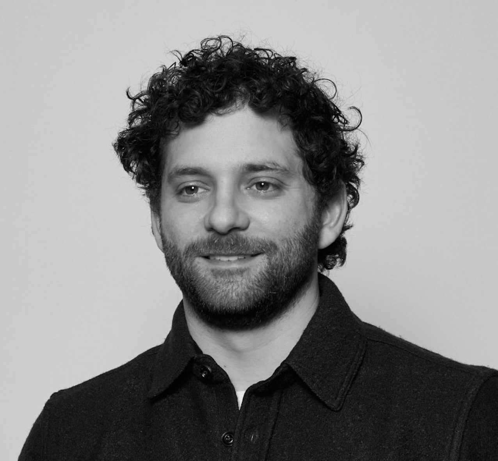

I’m Marley Randazzo, a PhD Candidate in Urban Planning & Development at the University of Southern California, Sol Price School of Public Policy.
I made a game: play MSAdle here, a Wordle-style guessing game where you identify U.S. metro areas by their industry employment patterns. It's designed to be a teaching tool, gamifying employment data and illuminating the patterns behind regional specialization.
My research explores how technology impacts urban development and spatial organization by altering the human behaviors that shape the built environment. I’m particularly interested in the effects of digital technology, which continues to displace physical space as a medium of social, cultural, and economic coordination.
My dissertation, Cities in the Age of Remote Work: investigating work-from-home’s impacts on urban decline and the spatial structure, features three papers examining how the rise of remote work has and has not altered our largest and most productive cities.
Other ongoing projects include research on historical urban development and land-use patterns, online dating, and the economic geography of today's food service industry.
Prior to academia, I received my master’s of urban planning (MUP) at USC, and my BA in Growth and Structure of Cities at Haverford College.